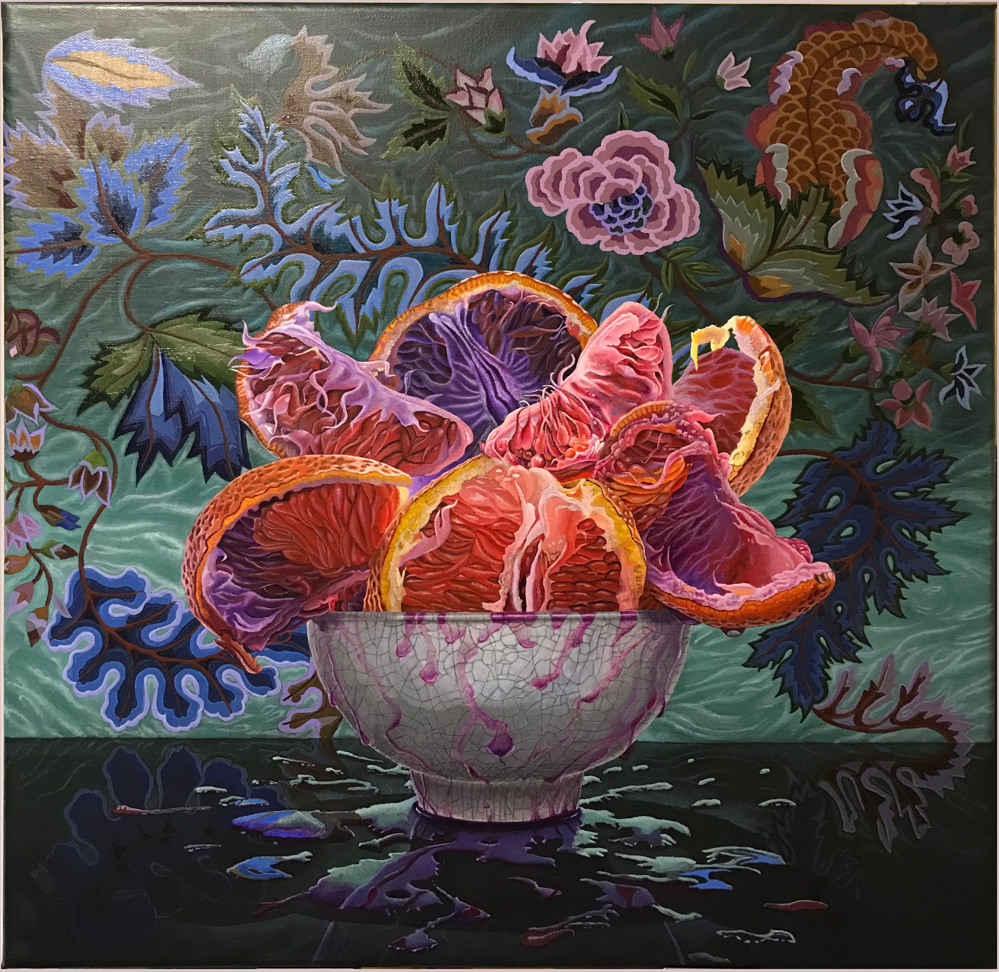
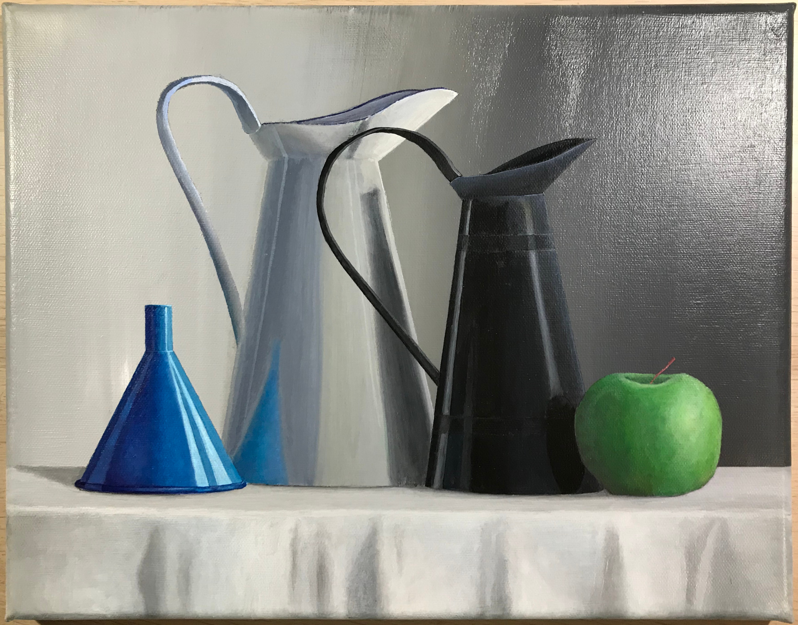
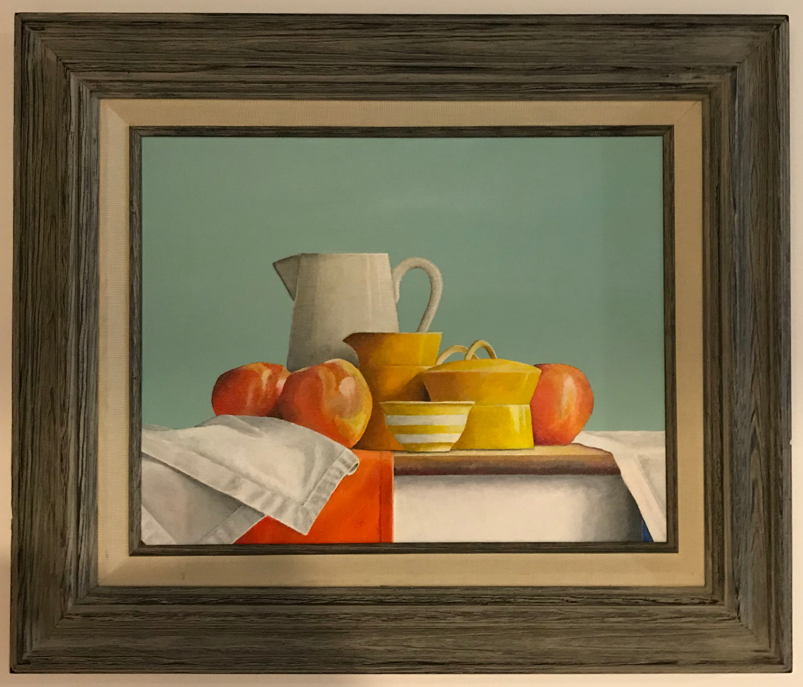
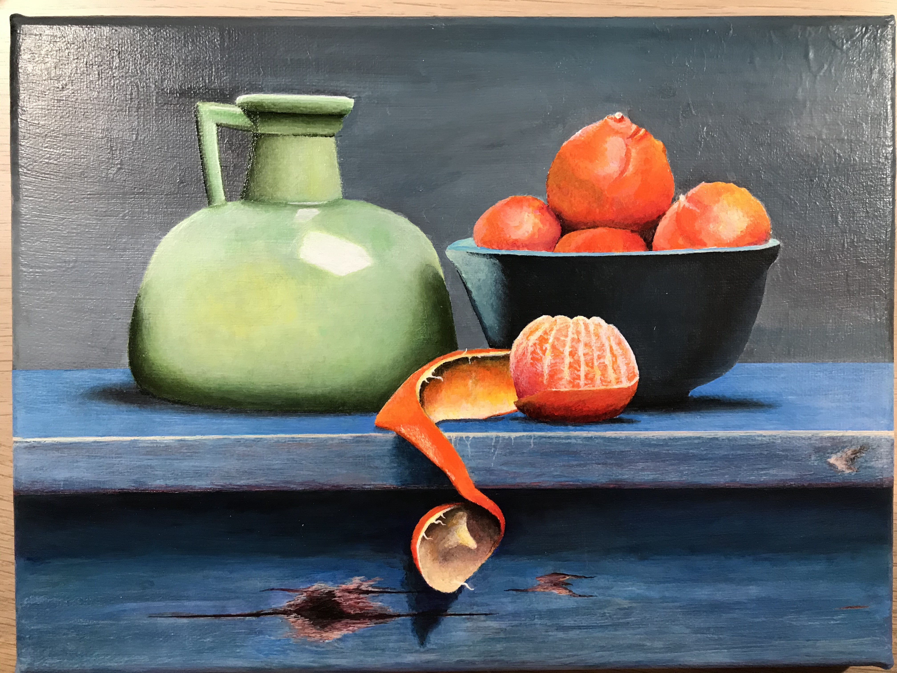
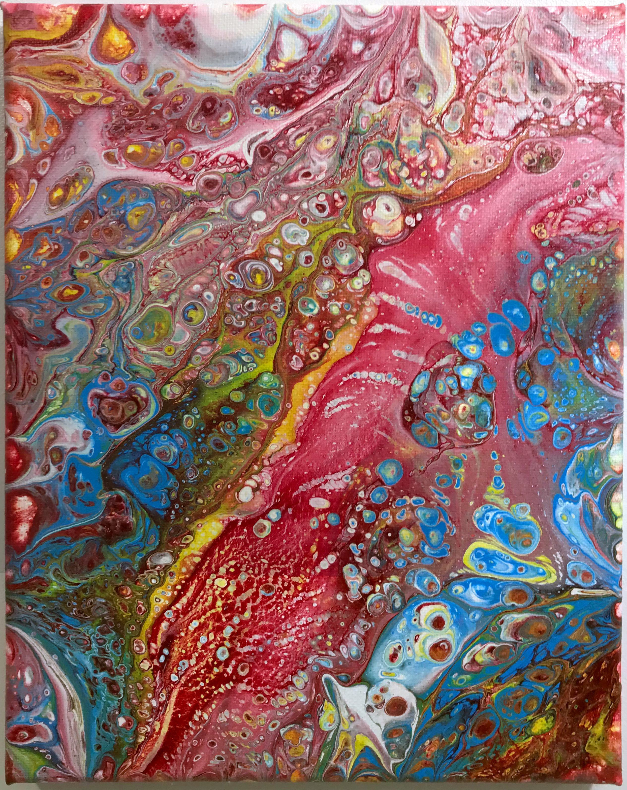
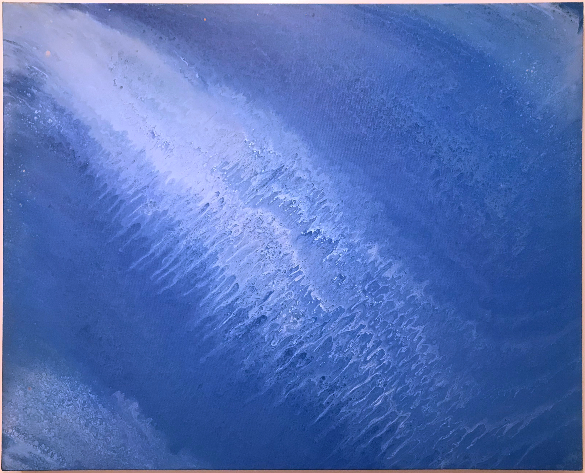
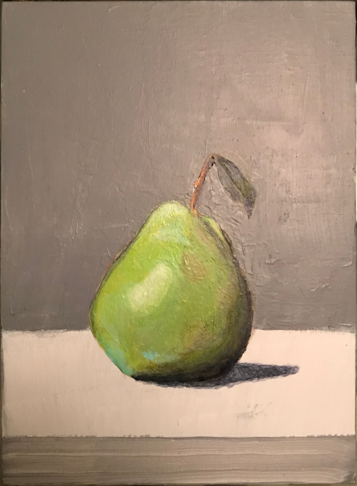
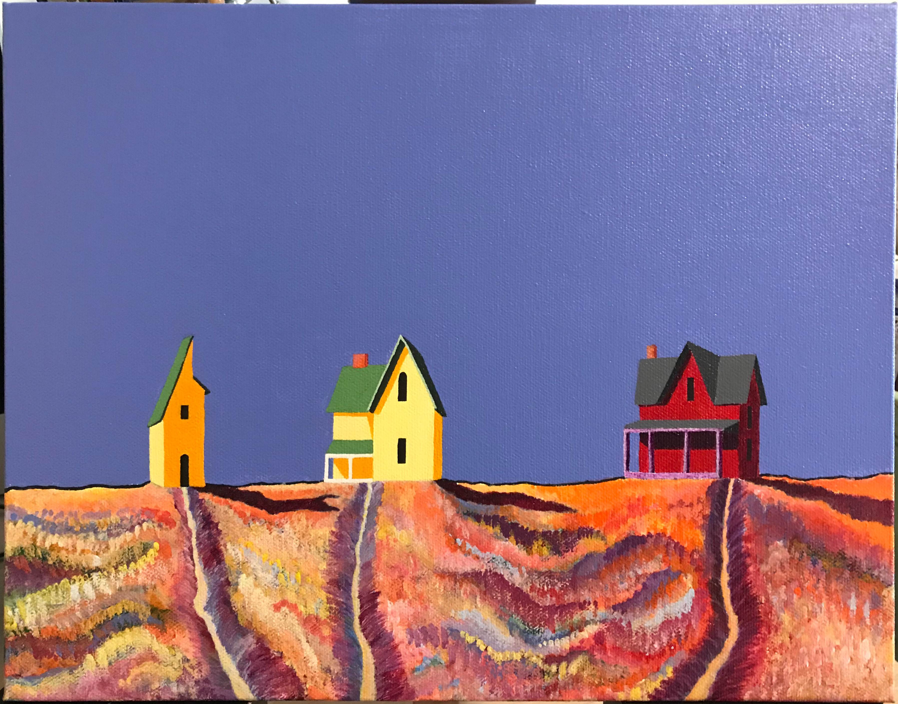

An in-progress reproduction that I'm painting of a painting named 'Blood Oranges' by Eric Wert. 20 inch by 20 inch Golden acrylics and Nova Color acrylics on canvas.

A painting of my own composition unnamed currently of two pitchers, blue funnel, and a green apple. 11 inch by 14 inch Golden acrylics on canvas.

A still life painting of several yellow vases, a white pitcher, several red apples, and some towels on a table. 11 inch by 14 inch Golden acrylics on canvas. Inspired by a painting by Janet Rickus called Peek-a-Blue.

A painting of a pale green vase, oranges in a dark blue bowl, and a worn-looking Swedish-blue table. 9 inch by 12 inch Golden acrylics and Nova Color acrylics on canvas. Inspired by the paintings of Jos Van Riswick.

An abstract flow-acrylic painting with reds and blues. This style of art is interesting because the formation of bubbles in the paint is thermodynamically driven and shows very clear regions of spinodial and binodal decomposition in the phases. 8 inch by 10 inch, acrylics on canvas.

An abstract painting with blue and white. 24 inch by 30 inch, acrylics on canvas.

A painting of a green and cobalt-turquoise pear in the style of artist Alpay Efe. Golden acrylics on wood panel.

A strange-perspective painting of three rural houses with long shadows and solid colors. 11 inch by 14 inch Golden acrylics on canvas. Inspired by a painting from Gary Kyte.